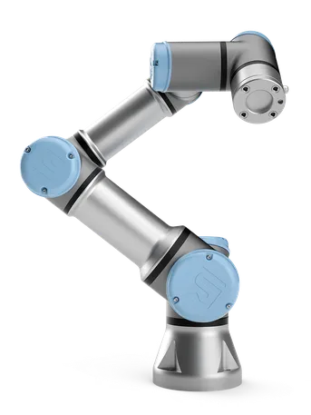

UR3e
Ur3e, robô projetado pela empresa Universal Robots é um modelo de robô colaborativo, ou seja, ele trabalha de forma integradaao lado de humanos em ambientes industriais , tendo como objetivo aumentar a produção e a redução dos trabalhos de força.
Adaptada de: EPL
Este robô é uma versão compacta de uma série de robôs, usado principalmente para ambientes de espaço limitado, por conta de ser um robô de pequeno porte, e também tendo sua carga e alcance limitados chegando a 50cm e carregando apenas 3kg, mas ainda sim vem trazendo uma ótima qualidade e desempenho, conseguindo fazer tarefas complexas e delicadas.

Imagem de: Universal Robots